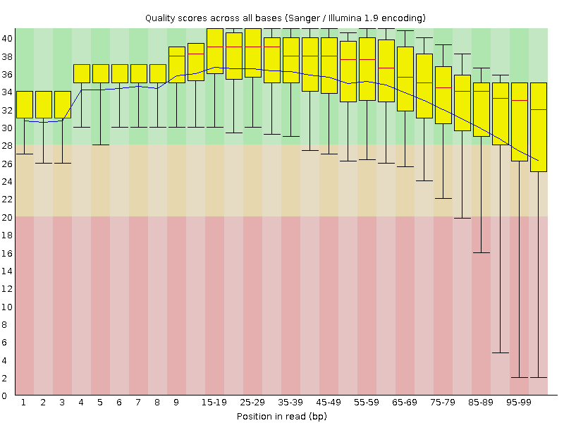
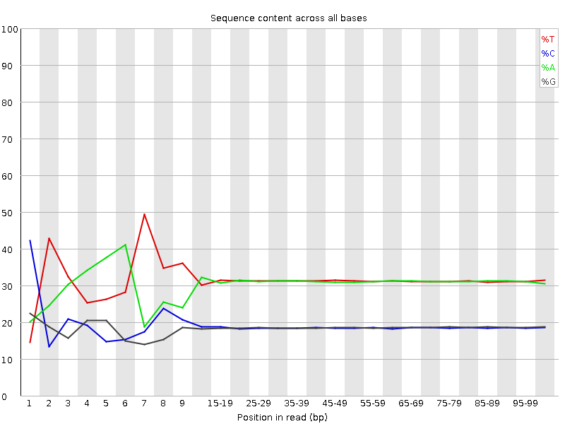
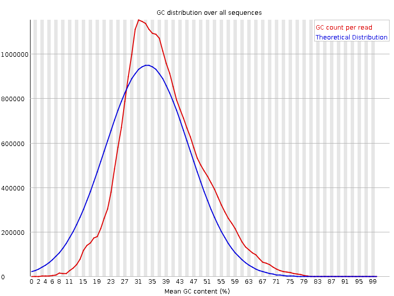
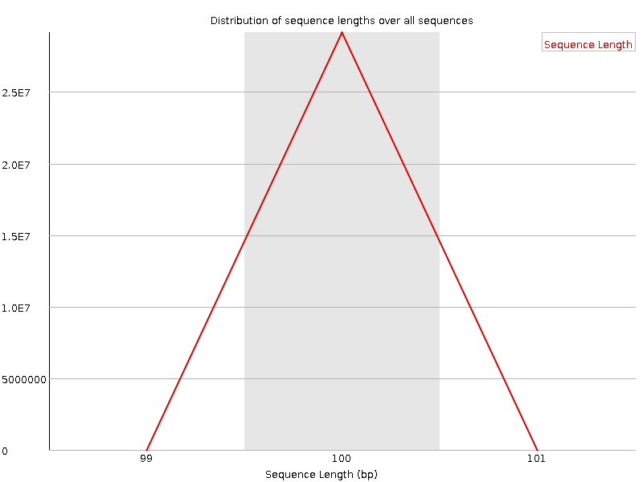
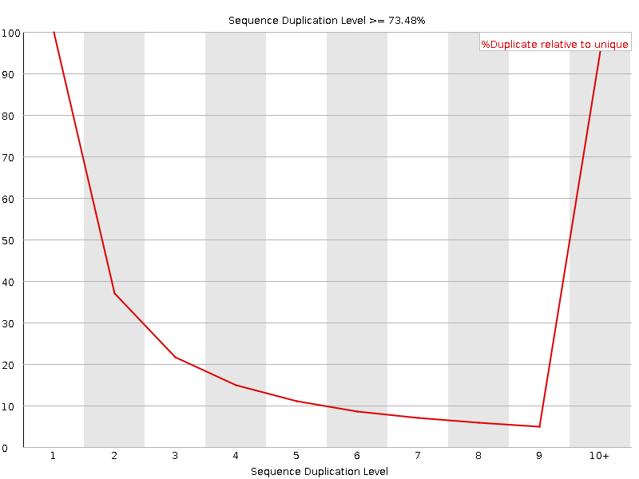
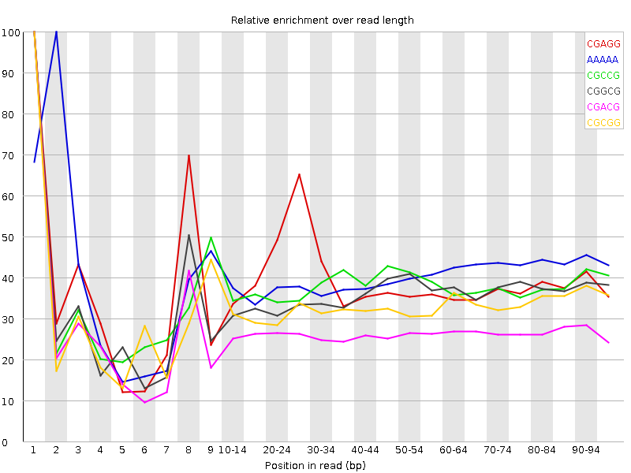

![[OK]](Icons/tick.png) Basic Statistics
Basic Statistics
| Measure | Value |
|---|---|
| Filename | c5_2.fq |
| File type | Conventional base calls |
| Encoding | Sanger / Illumina 1.9 |
| Total Sequences | 29145865 |
| Filtered Sequences | 0 |
| Sequence length | 100 |
| %GC | 37 |
Per base sequence quality

Per sequence quality scores

![[FAIL]](Icons/error.png) Per base sequence content
Per base sequence content

Per base GC content

![[WARN]](Icons/warning.png) Per sequence GC content
Per sequence GC content

Per base N content

Sequence Length Distribution

Sequence Duplication Levels

Overrepresented sequences
| Sequence | Count | Percentage | Possible Source |
|---|---|---|---|
| CTAATTTTCATCTTAATTCAACATCGAGGTCGCAAACATCTTTATCTATA | 67805 | 0.23264020470828367 | No Hit |
| CTTTCGTACAATTAATTAATATTTTATTATAGATAGAAACCAATCTGACT | 51965 | 0.17829287276256855 | No Hit |
Kmer Content

| Sequence | Count | Obs/Exp Overall | Obs/Exp Max | Max Obs/Exp Position |
|---|---|---|---|---|
| CGAGG | 2434860 | 2.2915754 | 5.858357 | 1 |
| AAAAA | 18459125 | 2.2655952 | 5.619182 | 2 |
| CGCCG | 1444320 | 2.2155619 | 5.8715706 | 1 |
| CGGCG | 1342140 | 2.0833774 | 5.824724 | 1 |
| CGACG | 2234175 | 2.0779145 | 7.798677 | 1 |
| CGCGG | 1196610 | 1.8574741 | 5.650147 | 1 |
| TCGAG | 3249990 | 1.815881 | 5.1289706 | 7 |
| CTCGA | 3195010 | 1.7641189 | 8.828733 | 1 |
| CGCGA | 1829190 | 1.7012546 | 6.0510235 | 1 |
| GATCG | 2954460 | 1.650758 | 5.052165 | 5 |
| CGATC | 2949770 | 1.6287099 | 5.2748103 | 4 |
| CTGGA | 2872465 | 1.6049448 | 6.6934543 | 1 |
| ATCGA | 4769625 | 1.5967243 | 5.400076 | 6 |
| CGCCA | 1732035 | 1.5919061 | 5.735699 | 1 |
| CCGGC | 1020790 | 1.5658743 | 5.1926017 | 1 |
| CGAGA | 2762875 | 1.5579795 | 5.345676 | 1 |
| GTCGA | 2739795 | 1.5308174 | 5.523266 | 1 |
| CTCCA | 2767800 | 1.5102214 | 6.473112 | 1 |
| CTCGC | 1622975 | 1.4780103 | 6.6005564 | 1 |
| CTTCG | 2692530 | 1.4730619 | 6.1539164 | 1 |
| CTTTC | 4526815 | 1.4702742 | 6.6080627 | 1 |
| CGAAG | 2592670 | 1.4620012 | 5.091729 | 1 |
| CTTTT | 7369260 | 1.4378856 | 5.5871654 | 1 |
| CTCGT | 2603945 | 1.4245977 | 6.9292293 | 1 |
| TCATC | 4326195 | 1.4181001 | 5.0087767 | 8 |
| CTCGG | 1501990 | 1.3841474 | 7.923871 | 1 |
| CTTCA | 4087050 | 1.3397099 | 5.0454783 | 1 |
| CGAAA | 3728185 | 1.2596164 | 5.312667 | 1 |
| CTTGG | 2219510 | 1.2287607 | 5.753004 | 1 |
| CTTTG | 3606470 | 1.1853255 | 5.634618 | 1 |